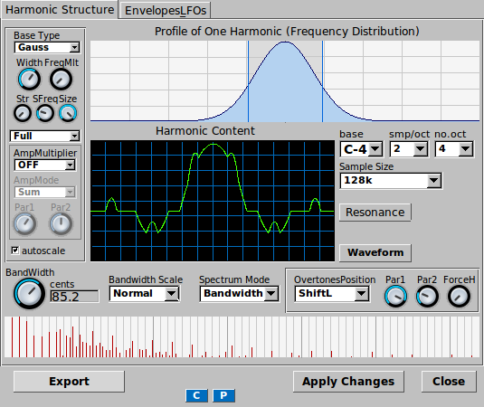
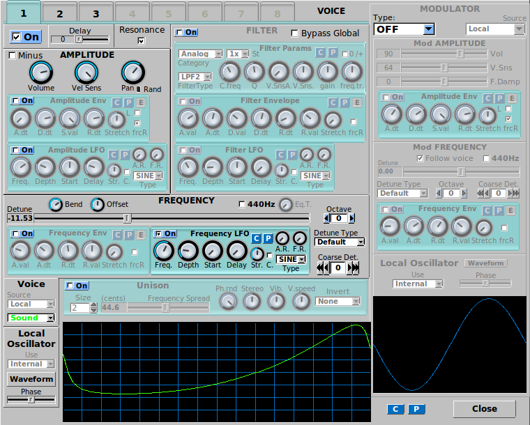

Here you can find screenshots showing some of Pastrami's many controls.
Controls for the AddSynth engine
Mixer controls in 8x2 configuration, with 6 active parts
Controls for the SubSynth engine
An example of instrument properties - active engines and metadata

Controls for the PadSynth engine
The virtual keyboard, containing many additional controls
The main window - the starting point for most Pastrami adventures
A resonance control window - in this case for an AddSynth voice

Oscillator controls for an AddSynth voice